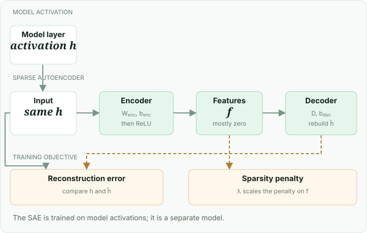

A single neuron can respond in several unrelated situations. A sparse autoencoder (SAE) looks for another description of an activation: a larger collection of learned features where only a few features are active for any one input.
The idea

An encoder turns the model activation h into feature strengths f. A decoder uses those strengths to reconstruct the activation:
One common training objective balances reconstruction error with a sparsity penalty:
The first term rewards a close reconstruction. The second discourages large numbers of active features; λ controls the tradeoff. SAE designs and sparsity penalties vary.
A tiny example
Suppose two decoder features are directions [1, 0] and [0, 1]. Feature strengths [2, 0] reconstruct [2, 0]: only the first feature is active. In a real SAE, researchers inspect many examples that activate a feature to form a hypothesis about its meaning.
What you need
Representative activations and an SAE trained for the model and layer, or data and compute to train one. Features may be ambiguous or split across several directions; a plausible label alone does not establish a feature’s causal role.